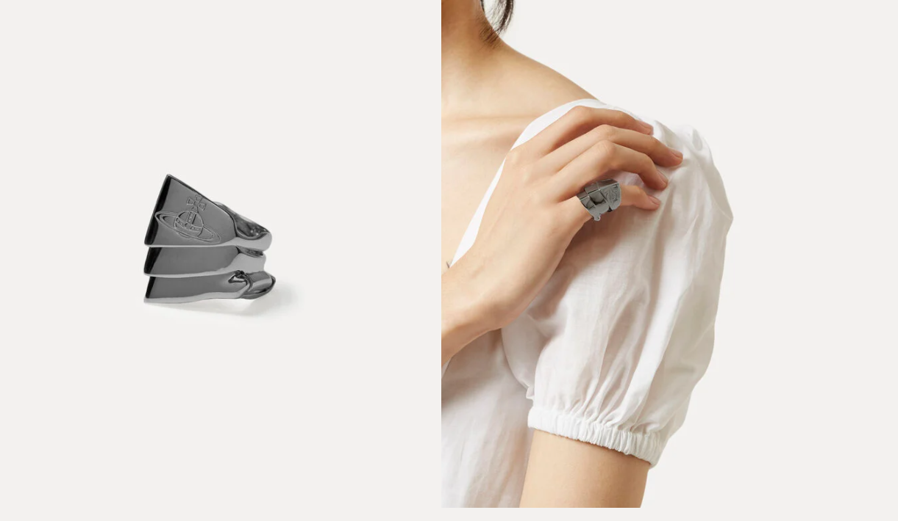

|
Vivienne Westwood.My Opinions on VW Products.
|
|
|
Vivienne Westwood.My Opinions on VW Products.
|
| Product Name. | Description. | Price. |
|---|---|---|
| Knuckleduster Ring Gunmetal-Tone.  Source! |
The gunmetal-tone Knuckleduster Ring has been designed in three hinged sections giving the option to be worn with an armadillo effect or to be transformed into three linked rings which open out across your fingers. - The Reason this is one of my favorite Vivivenne Westwood Products is because of one of my favorite Anime characters Nana Osaki would always wear it and I thought it was a cool touch to her punk look. |
$335 |
| Anglomania Melissa Black Heels. Source! |
- I orignally found these on Depop and sadly they were nowhere to be found on the official Vivienne Westwood website, due to more collections coming out. The Reason that these are one of my favorite pieces is because they give off such a mysterious and edgy vibe but are also very bold, I would definetly pair these with some sort of extravigant short red dress! | $293 |
| Petra Pendant Pink Gold-Tone. Source! |
The Petra Pendant, arriving in pink-gold tones, looks great with every outfit. Boasting Westwood’s classic asymmetrical heart-shaped design, the pendant features a natural and sustainable flame red mother of pearl, which is outlined by a row of light siam crystals, along with our Orb emblem in a contrasting pink-gold colourway. - The Reason I chose this necklace as one of my favorites is because first of all, my favorite color is red and second, I feel as if it gives off a very vintage grunge vibe and the deep red gives it such a bold feeling. |
$293 |